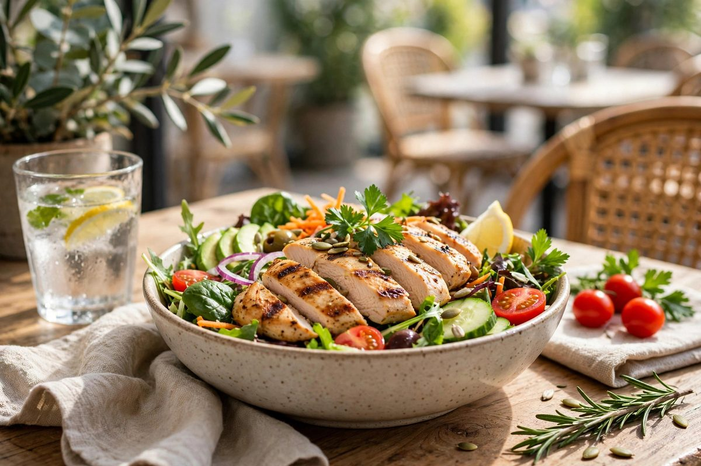

Eating Out While Losing Weight — Enjoy Restaurants Without Undoing Progress
How to eat out and stay on plan: choosing restaurants, ordering smart, managing portions, and handling social pressure.
Eating out is part of life
Weight loss does not mean giving up restaurants. Eating out is social, enjoyable, and part of a normal life, and a plan that forbids it will not last. The challenge is that restaurant meals are often larger and richer than home meals: a single restaurant main course can contain 1,000 calories or more, and bread, drinks, and dessert add more. But with a little planning, you can enjoy a restaurant meal and stay close to your target. The goal is not perfection; it is damage limitation and enjoyment.
Planning before you go
Look at the menu online before you go and decide roughly what you will order. Choosing in advance avoids deciding while hungry, when the richest dish looks most tempting. Eat a normal, balanced meal earlier in the day rather than skipping food to save calories, because arriving very hungry makes overeating likely. If you know the meal will be large, eat a little less at lunch, but do not starve yourself. Plan for the event as part of your week, not as a failure of it.
Ordering smart
Choose grilled, steamed, or roasted dishes over fried ones. Ask for dressing and sauce on the side, and for vegetables or salad instead of chips. Start with a salad or a broth-based soup, which fills you up for few calories. Watch the bread basket: two or three rolls can add 300 calories before the meal arrives. Ask for it to be removed, or take one piece and stop. For drinks, choose water or unsweetened drinks rather than sugary ones or alcohol, or keep alcohol to one small serving.
Portions and pacing
Restaurant portions are often built for value, not for health. Share a main course, order a starter as your main, or ask for a takeaway box at the start and put half away before eating. Eat slowly, put your cutlery down between bites, and check in halfway: are you full, or just finishing the plate? Stop when you are comfortably full, not when the plate is empty. Dessert is fine occasionally: share one, choose fruit, or have a small portion. Denying yourself every dessert makes eating out feel like a punishment.
Social pressure and setbacks
Friends and family may encourage you to eat more, and that pressure is real. A simple, confident answer helps: I am enjoying this, I have had enough, thank you. You do not need to explain your diet or apologise for your choices. If a meal goes over your target, do not treat it as a disaster. One meal does not undo weeks of progress, and the worst response is to give up entirely. Return to your normal plan at the next meal, and look at the weekly average, not a single evening.
Fast food and takeaways
Fast food needs more care, because portions are large and the food is often high in refined carbohydrate, salt, and saturated fat. Choose grilled over fried, skip the sugary drink, and keep the portion to the standard size rather than upgrading. A grilled chicken salad or a small burger without large fries is a better choice than a large fried meal. Takeaways at home are easier, because you can serve your portion onto a plate, add a salad, and put the rest away. Enjoy the meal, note what worked, and move on.
Frequently Asked Questions
How can I eat out without ruining my diet?
Plan ahead: check the menu, choose grilled dishes, ask for sauce on the side, watch the bread, and stop when comfortably full. One restaurant meal does not undo weeks of progress.
Should I skip meals before eating out?
No. Arriving very hungry makes overeating likely. Eat normally earlier in the day and a little less at the meal before, if you like, but do not starve yourself.
What is the best drink choice at a restaurant?
Water is best. Unsweetened tea or coffee are also good. Avoid sugary drinks and keep alcohol to one small serving, or skip it.